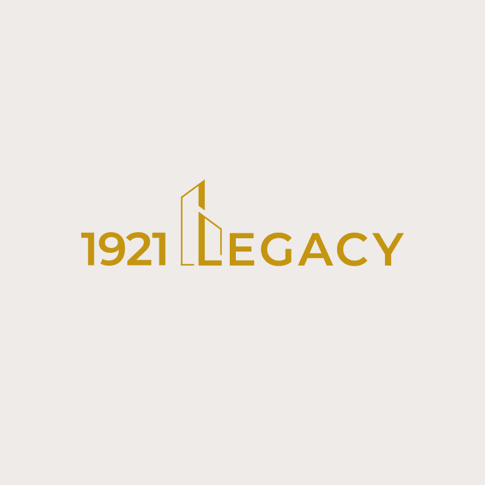
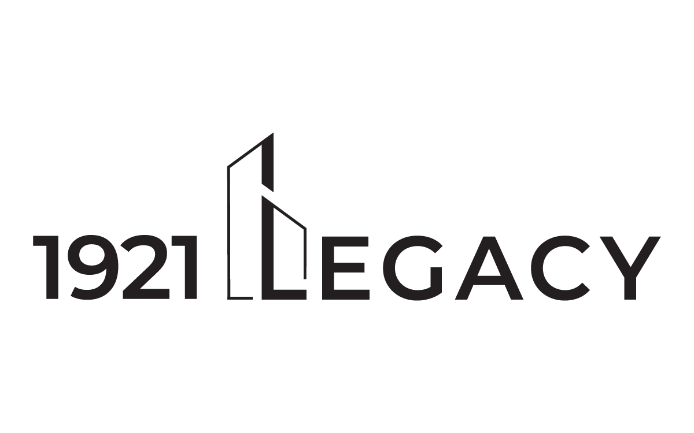
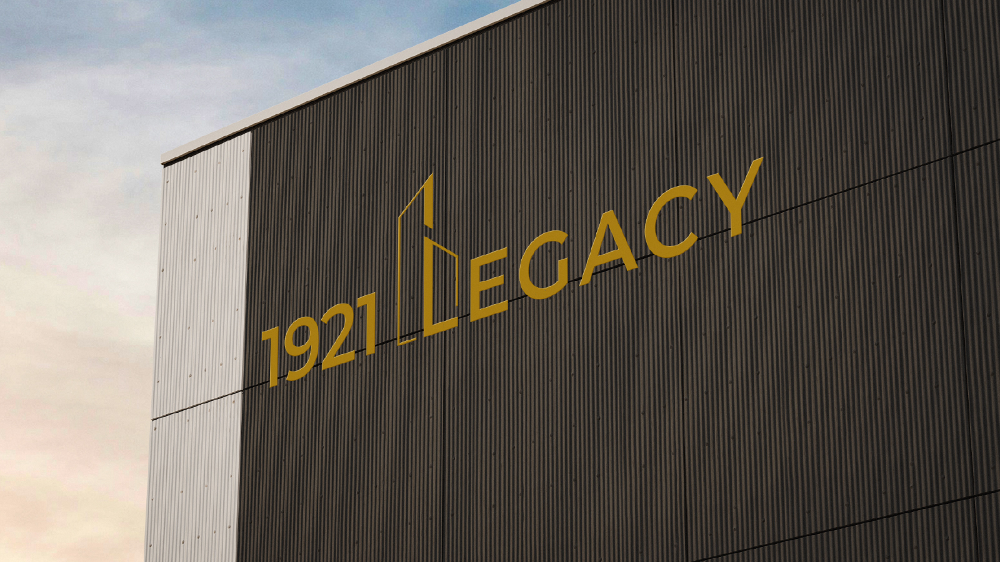
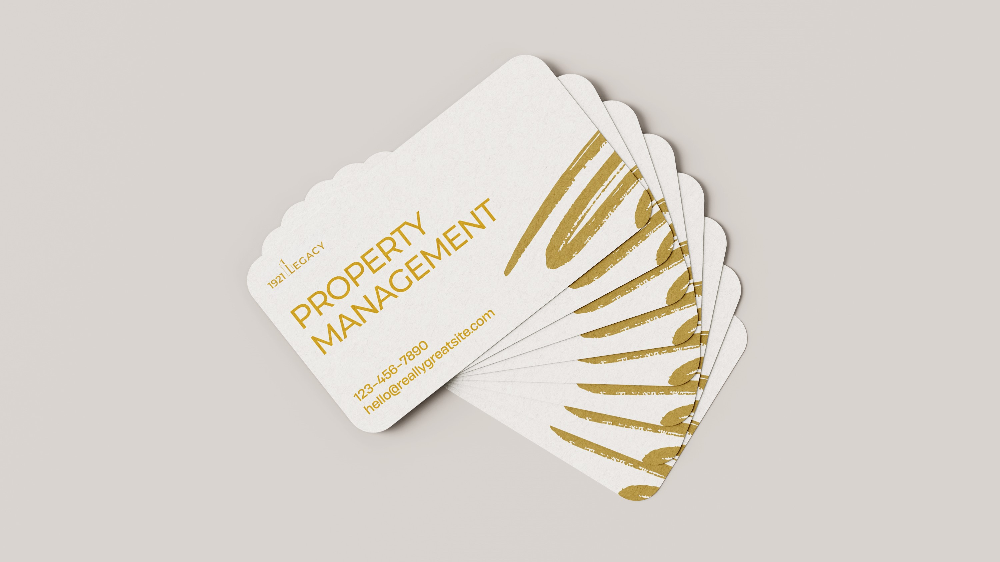
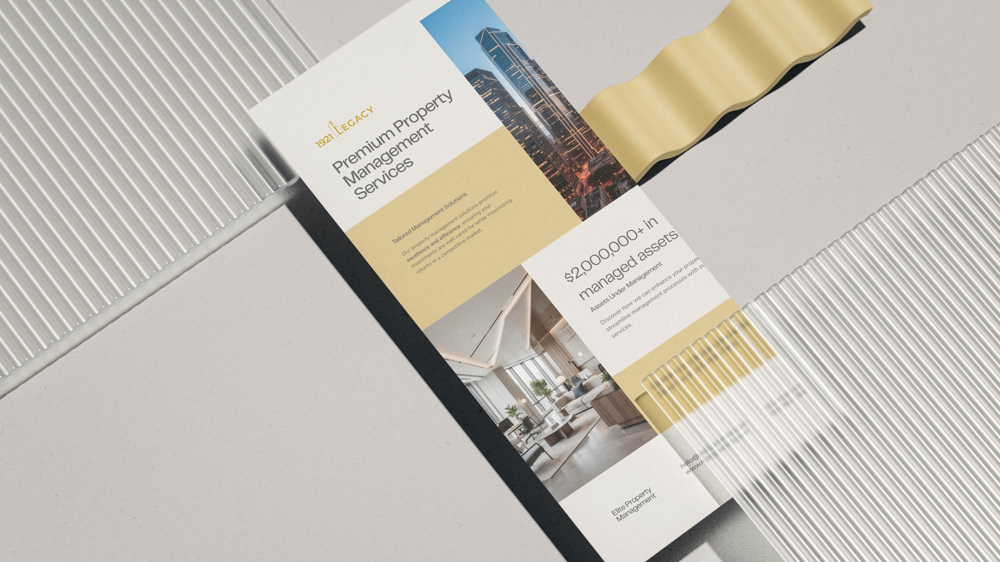
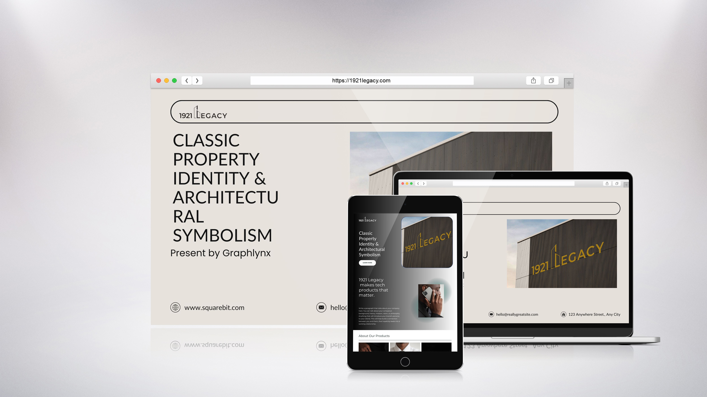

1921 Legacy
Classic Property Identity & Architectural Symbolism
Details
- Client
- 1921 Legacy
- Industry
- Real Estate / Property Management
- Year
- 2025
Scope
- Services
-
- Brand Identity
- Logo Design
- Visual System
- Key Values
-
- Heritage
- Stability
- Restrained Elegance
Overview
The 1921 Legacy logo is a classic property identity built around architectural symbolism and restrained elegance. The mark combines a refined wordmark with a vertical building form integrated into the lettering, creating a strong association with real estate, permanence, and long-term value. The overall design prioritizes clarity, balance, and timeless appeal.
Concept & Symbolism
The icon is constructed from simplified vertical forms that reference building facades and structural pillars. Its upward emphasis conveys stability, growth, and longevity, while the clean geometry keeps the mark contemporary rather than ornamental.
By integrating the architectural element directly into the wordmark, the logo achieves a cohesive identity that feels established, confident, and purpose-driven.
- Vertical Forms: References building facades and structural pillars.
- Upward Emphasis: Conveys stability, growth, and longevity.
- Clean Geometry: Keeps the mark contemporary rather than ornamental.
- Integrated Mark: A cohesive identity that feels established.
Typography
The wordmark uses Montserrat Semi Bold, a modern geometric sans-serif chosen for its clarity, balance, and structural precision. The typeface offers clean letterforms and consistent stroke weight, reinforcing the architectural logic of the icon.
Its contemporary construction prevents the brand from feeling dated, while the semi-bold weight adds authority and presence without appearing heavy or aggressive.
Color Palette
The palette pairs a Muted Gold tone with a soft Off-White base to create a sense of understated luxury and heritage. The gold conveys value, trust, and longevity, aligning with the concept of legacy and long-term property stewardship.
Muted Gold
#C5A065
Charcoal Base
#1A1A1A
Off-White
#F9F8F4
Palette Logic:
Rather than appearing flashy, the gold tone remains controlled and elegant, reinforcing a premium but restrained brand personality.
The off-white background provides warmth and balance, allowing the gold elements to stand out clearly.
Logo Variations

Real-World Applications

Exterior Branding
Building facade application

Stationery
Letterhead & Business Cards

Print Collateral
Brochures and flyers

Website
Desktop and mobile view
Final Outcome
The final logo delivers a sophisticated and enduring identity designed for a property management brand rooted in heritage and trust. Its minimal construction, architectural symbolism, and balanced typography ensure versatility across real-world applications while maintaining a strong, credible visual presence.